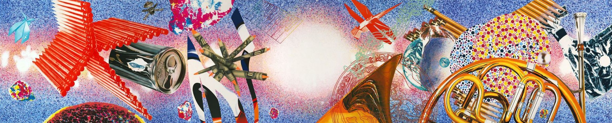

+++
title = "Pop Art Sanat Akımı"
description=""
url="sayi-9/pop-art-sanat-akimi"
aciklama="Pop Art, 1950'li yıllarda ortaya çıkmış ve başta Amerika olmak üzere tüm dünyayı etkisi altına almış bir sanat akımıdır. Aynı yıllarda Amerikalılar, topluma bir rüya adı altında tüketim üzerine kurulu bir yaşam tarzı sunmaktadır. Toplumda etkisini giderek arttıran yeni tüketim dünyası Pop Art akımının ortaya çıkmasına neden olmuştur."
type="sayfa"
thumb="/img/pop-art-thumbnail.jpg"
date = "2021-05-05"
sayi=["09"]
sayfa="05"
yazar=["merve cetin"]
tags= ["ana sayfa", "dergi", "sanat akimi"]
+++

<div class="container">
   <p>
      Pop Art, 1950&#39;li yıllarda ortaya çıkmış ve başta Amerika olmak üzere
      tüm dünyayı etkisi altına almış bir sanat akımıdır.
   </p>
   <p>
      Aynı yıllarda Amerikalılar, topluma bir rüya adı altında tüketim üzerine
      kurulu bir yaşam tarzı sunmaktadır. (7. sayımızdaki &#39;&#39;Amerikan
      Rüyası&#39;&#39; adlı yazımıza
      <a href="https://www.markut.net/sayi-7/amerikan-ruyasi/" target="_blank">buradan</a>
      ulaşabilirsiniz.) Toplumda etkisini giderek arttıran yeni tüketim dünyası
      Pop Art akımının ortaya çıkmasına neden olmuştur.
   </p>
   <p>
      Pop Art, 1950&#39;lerde İngiltere&#39;de doğduğu halde asıl gelişme
      alanını ABD&#39;de bulmuş, adeta bu ülkenin kimliği ve genel çehresiyle
      bütünleşmiştir.
   </p>
   <div class="row">
      <div class="col-md-4">
         <p>
            {{}}
         </p>
      </div>
      <div class="col-md-5">
         <p>
            Pop Art sanatçıları resim, heykel, filmler ve çevresel
            düzenlemelerle kendilerini ifade ederken konu olarak gündelik yaşam
            nesnelerini, kitlesel medyayı, reklamları, çizgi roman karelerini,
            billboardları, paketleri, televizyon ve sinema kişilerini/
            figürlerini, kamusal mekân nesnelerini vb. almışlardır.
            Kullandıkları stil kitlesel medya üretiminin stillerine benzer:
            kalın çizgiler ve şekiller, parlak, uçucu renkler; genellikle
            tanınan nesne ve insanlara yönelik düz bir yaklaşım.
         </p>
      </div>
      <div class="col-md-3">
         <p>
            {{}}
         </p>
      </div>
   </div>

   <p>
      Pop Art, ruhsal ve psikolojik bir derinlikten olabildiğince uzaktır.
      Yüzeyin ötesinde anlamlar, örtük ifadeler vaat etmez. Oyunu sever, paradik
      ve ironiktir. Ele aldığı nesneler, kişiler, durumlar, edimler ve
      kavramlarla ilişkisi kesinlikle eleştirel değildir.
   </p>
   <p>
      Pop art bir önbilgi gerektirmemektedir. Kolay, çabuk ve eğlencelidir.
      Gündelik modern hayatı işler. Sanatçılarının eserleri, sıradan insanlar
      içindir. Popüler sanat olgusu Amerika&#39;da bir kitle hareketine
      dönüşmüştür. Bunun başlıca sebebi ise televizyon, radyo, gazete ve dergi
      gibi kitle iletişim araçlarının çok fazla ve her yerde olmasıdır.
   </p>

   <strong
      ><em
         >Şimdi biraz da Pop Art&#39;ın sembol isimlerini inceleyelim;</em
      ></strong
   >
   <h2 id="andy-warhol">Andy Warhol</h2>
   <div class="row">
      <div class="col-md-4">
         <p>
            {{}}
         </p>
      </div>
      <div class="col-md-4">
         <p>
            Warhol 1960&#39;ların başlarında, New York&#39;taki pop art
            camiasının bir ferdi haline gelmiştir. Bu camiada herkes bağımsız
            olarak çalışıyor fakat ortak bir noktada birleşiyorlardı.
         </p>
         <p>
            Andy Warhol, Marilyn Monroe vb. film yıldızlarını ya da gazete
            sayfalarındaki olay fotoğraflarını seriler hâlinde ele almış,
            Amerikan yaşam tarzına ayna tutmuştur. Böylece kitle kültürünün
            çeşitli yönlerini yansıtmıştır.
         </p>
      </div>
      <div class="col-md-4">
         <p>
            {{}}
         </p>
         <small
            >*İllüstrasyon: Andrew Rae, &#39;&#39;İşte Warhol&#39;&#39;*
         </small>
      </div>
   </div>

   <div class="row">
      <div class="col-md-6">
         <p>
            1962&#39;de Warhol bir
            <strong><em>Campbell&#39;s çorba konservesi</em></strong
            >nin resmini yapmıştır. Neden bu konuyu seçtiği sorulduğunda Warhol,
            &#39;&#39;Eskiden o çorbayı içerdim. Hep aynı öğle yemeğini
            yerdim.&#39;&#39; demiştir. Warhol bir konu bulmuştu: Amerikan
            markası. Takip eden yıllarda Cambell&#39;s çorba konservesinin 32
            çeşidinin tümünü, Coca-Cola ve Brillo süngerleri gibi diğer simgesel
            markaları resmetmiştir.
         </p>
      </div>
      <div class="col-md-6">
         <blockquote>
            <p>
               &#39;&#39;Satın almak düşünmekten daha Amerikalı ve ben de onlar
               kadar Amerikalıyım.&#39;&#39;
            </p>
         </blockquote>
      </div>
   </div>

   <div class="row">
      <div class="col-md-4">
         <p>
            {{}}
         </p>
      </div>
      <div class="col-md-5">
         <p>
            Campbell&#39;s serigrafileri hamdır. Özgün fırça darbeleri gibi
            &#39;&#39;sanatsal&#39;&#39; dokunuş içermezler. Çünkü Warhol&#39;un
            üslubu &#39;&#39;olduğu gibi bırak&#39;&#39;tır. Bu stil, halkın ve
            eleştirmenlerin çok da hoşuna gitmemişti. Eseri, pek çok insan
            tarafından bir çorba ambalajının kopya edilmesi olarak görüldüğünden
            yaklaşımı soğuk ve nihilist bulundu. Warhol&#39;a göre ise özneleri
            süslemeyerek &#39;&#39;doğal güzellik&#39;&#39; i vurguluyordu.
         </p>
      </div>
      <div class="col-md-3">
         <p>
            {{}}
         </p>
      </div>
   </div>

   <div class="row">
      <div class="col-md-6">
         <p>
            1962&#39;de, Marilyn Monroe&#39;nun ölümünden dört ay sonra, Warhol,
            1953 yapımı Niagra filminin aynı tanıtım fotoğrafına dayanan
            aktrisin seri üretilmiş birkaç fotoğrafını yarattı . Muhtemelen en
            ünlü eseri olan görüntünün tekrarı, medyadaki varlığını temsil
            ediyordu. Diptik baskı, onu bir ünlünün kültünü ve ölümünü
            simgeleyen canlı renkler ve soluk siyah beyaz portreleri içeriyordu.
            Jackie Kennedy ve Elvis Presley gibi ünlülere benzer bir muamele
            yapmaya devam etti.
         </p>
         <blockquote>
            <p>
               İş hayatında iyi olmak en büyüleyici sanat türüdür... Para
               kazanmak ve çalışmak sanattır ve iyi iş en iyi sanattır.
            </p>
         </blockquote>
      </div>
      <div class="col-md-6">
         <p>
            {{}}
         </p>
      </div>
   </div>

   <p>
      {{}}
   </p>
   <small>Andy Warhol'un Portre Çalışmaları</small>

   <p>
      Narsistik 1970&#39;ler portre yapmak için mükemmel bir dönemdi: İnsanlar
      ölümsüzleştirilmek istiyordu. Çevresine saray ressamı edasıyla yaklaşan
      Warhol, sanat tarihçisi Robert Rosenblumb&#39;un deyişiyle &#39;&#39;Yok
      olmanın eşiğinden görkemli bir portre ressamına&#39;&#39; dönüşmeye
      başlamıştı. Warhol, ünlüleri baştan yaratan adam rolüne girmişti.
   </p>

   <h2 id="richard-hamilton">Richard Hamilton</h2>
   <div class="row">
      <div class="col-md-6">
         <p>
            Pek çok kişi tarafından İngiliz pop sanatının yıldızı olarak kabul
            edilen Richard Hamilton, 1950&#39;ler ve 60&#39;larda bir dizi ünlü
            eser yarattı. Andy Warhol&#39;dan daha az bilinen bir isim olsa da,
            Pop sanatının temelini atan ve ilk olarak amaçlarını ve ideallerini
            tanımlayan Richard Hamilton&#39;dı.
         </p>
         <p>
            Hamilton, bize Pop Art&#39;ın İngiltere&#39;de ortaya çıktığını
            hatırlatmaktadır. Pop terimini bulmadan önce, akım için
            kullandıkları terim &quot;yeni vahşet&quot; idi. Daha çok genel
            sanat temalarına ve tasvirlerine Hamilton&#39;un imgelerinde bulduğu
            kasıtlı saldırıyı açıklıyordu.
         </p>
         <p>
            {{}}
         </p>
         <p>
            Hamilton,
            <em
               >‘<strong
                  >Günümüz Evlerini Bu Kadar Farklı ve Cazip Kılan
                  Nedir?</strong
               >’</em
            >
            resmi ile <em>ilk Pop Art eseri</em> üretmiştir. Bu eser aslında
            çoğunluğu Amerikan dergilerinden kesilme objelerin yerleştirildiği
            bir kolaj çalışmasıdır. Dönemin Amerika’sında popüler olan birçok
            alet ve ürün resimde görülebilir. Ayrıca film afişleri ve dönem
            yaşantısını yansıtan daha birçok detay da eserde kendine yer bulur.
         </p>
         <p>
            Bu açıdan bakıldığında Hamilton’un eseri, popüler kültürü biçimsel
            olarak da teknik olarak da benimsemiş durumdadır. O, izleyiciye
            dönemin Amerikan yaşantısından gerçekçi bir kesit sunar. Bize
            verdiği, tüketim toplumunun bir görüntüsüdür. Kadın bedeni de erkek
            bedeni de objeleştirilmiştir. Resimdeki her şey tüketilmeye hazır
            haldedir. Resmin yapılış tekniği de kes-yapıştır temeline dayanır.
            Yani aslında bunu herkes kolaylıkla yapabilir. Tam da bu yüzden
            eserin kendisi bile bir tüketim nesnesi haline gelir.
         </p>
      </div>
      <div class="col-md-6">
         <p>
            {{}}
         </p>
         <p>
            Kariyeri boyunca çok çeşitli teknikler kullanmasına rağmen,
            &#39;&#39;<strong><em>Moda Plakası İçin Çalışma</em></strong
            >&#39;&#39; gibi en tanınmış eserleri hep kolaj tekniği ile
            yapılmıştır.
         </p>
         <blockquote>
            <p>
               &quot;Sanat, bir sanatçının duyarlılıkları ve rolün gerektirdiği
               türden hırs ve zeka, merak ve iç yönelim aracılığıyla
               yapılır.&quot;
            </p>
         </blockquote>
         <p>
            {{}}
         </p>
         <small>Interior II, 1962</small>
      </div>
   </div>

   <h2 id="roy-lichtenstein">Roy Lichtenstein</h2>
   <p>
      Pop sanatının önemli temsilcilerinden Roy Lichtenstein (1923-1997),
      popüler reklam ve çizgi roman ögelerini eserlerinde kullanarak ün
      kazanmıştır. Çizgi romanlardan seçtiği bir kareyi büyüten sanatçı, güncel
      ve popüler olay kahramanlarını büyük bir yalınlıkla ve özgün tekniğiyle
      yeniden oluşturmuştur. Kendini ve yapıtlarını ‘’yapay’’ olarak
      değerlendirmiştir. Sanatçının yorumladığı basit ve canlı pop sanatı, soyut
      dışavurumculuğun hâkim olduğu dönemde radikal bir değişimin göstergesi
      kabul edilmiştir. Lichtenstein, sanatında &#39;yüksek&#39; ve
      &#39;düşük&#39; sanat arasında bir köprü kurmuştur: ticari imge stilini
      geleneksel resim aracıyla birleştirmiştir.
   </p>
   <div class="row">
      <div class="col-md-6">
         <p>
            {{}}
         </p>
      </div>
      <div class="col-md-6">
         <p>
            {{}}
         </p>
         <p>
            {{}}
         </p>
      </div>
   </div>

   <p>
      Lichtenstein, 1960&#39;ların ortalarında çizgi roman motiflerinden
      uzaklaşsa da, popüler görüntülerin estetiğini ve tarzını taklit etmeye
      devam etti. Lichtenstein, benzer sanatçıların başyapıtlarını yeniden
      yaratarak resimlerinin konusu olarak sanatı keşfetmeye başladı:
      <strong><em>Pablo Picasso, Piet Mondrian</em></strong> ve
      <strong>*Vincent van</strong> <strong>Gogh*</strong>. Bu sanatçıların
      eserlerini Pop art tarzında ve benzer resimlerde yeniden yorumladı.
   </p>

   <h2 id="james-rosenquist">James Rosenquist</h2>
   <p>
      {{}}
   </p>
   <small>Time Dust, 1992</small>
   <p>
      Pop art akımında çığır açan bir figür olan James Rosenquist, en çok büyük
      ölçüde reklamlardan ve kitle iletişim araçlarından ödünç alınmış
      esrarengiz bir şekilde yan yana dizilmiş parçalı görüntülerden oluşan
      devasa kolaj resimleriyle tanınır . Tüm galeri duvarlarını kaplayacak ve
      izleyiciyi boğacak şekilde bir araya getirilip büyütülmüş, tüketici
      ürünleri, silahlar ve ünlülerin görünüşte ilgisiz resimleri; sanatçının
      sosyal, politik ve kültürel kaygılarına işaret etmektedir. Reklam panosu
      ressamından sanatçıya dönüşen ilk çalışmaları, 1960&#39;larda
      Amerika&#39;da gelişen tüketim kültürünün simgesi olarak kabul edilir.
   </p>

   <div class="row">
      <div class="col-md-6">
         <p>
            Sanatçının çığır açan eseri olarak değerlendirilen &#39;&#39;<strong
               >*Başkan Seçilmiş</strong
            >&#39;&#39;* Rosenquist&#39;in reklam yoluyla bilinçaltı ikna
            konusundaki hayranlığından bahsediyor. Rosenquist, reklam
            görüntülerine güçlü bir ilgi duyup gücünü sanat eserine dönüştürmek
            istedi. Sanatçı, &quot;<em
               ><em
                  >Resim muhtemelen reklamdan çok daha heyecan verici. Öyleyse
                  neden bu, güç ve zevkle yapılmasın ki?</em
               ></em
            >
            &quot; demiştir. Bu büyük ölçekli çalışma, Rosenquist&#39;in farklı
            görüntüleri harmanlama, birbirine kenetleme ve yan yana koyma
            teknikleriyle birleştirme tekniğinin yanı sıra popüler görüntüleri
            kullanarak politik ve sosyal yorumları dahil etme becerisinin bir
            örneğidir.
         </p>
         <p>
            Pop art meslektaşlarının aksine Rosenquist asla tuvale boya sürmedi,
            ekranlar ya da süzgeçler kullanmadı. Bir fırçayla tuval üzerine
            geniş vuruşlar yaparak güçlü bir şekil ve renk dinamiği
            yarattı. Yakın çekim detaylarının bulanıklaştığı, bir kişinin görüş
            alanını genişleten detaylar ve şekillerle, çevresel görünümle
            ilgileniyordu.
         </p>
      </div>
      <div class="col-md-6">
         <p>
            {{}}
         </p>
         <small>President Elect, 1961</small>
      </div>
   </div>

   <h2 id="keith-haring">Keith Haring</h2>
   <div class="row">
      <div class="col-md-6">
         <p>
            Ketith Haring, görsel dilini, ikonik figürlerini ve çizgilerini
            nerede görsek tanıyabileceğimiz bir isim. Sadece resim, baskı ve
            grafik olarak galeri ve müzelerde değil duvar resimleri ve
            heykelleriyle kamusal alanda da geniş yer edinmiştir.
         </p>
         <p>
            Üretmeye 70’li ve 80’li yıllarda New York metrolarında sokak
            sanatıyla başlayan Haring’in ünü, 1984 yılında Avustralya’nın farklı
            şehirlerinde boyadığı duvar resimleriyle sınırları aştı.
         </p>
         <p>
            {{}}
         </p>
      </div>
      <div class="col-md-6">
         <p>
            {{}}
         </p>
         <small>Pop Shop 1, 1987</small>
         <br><br>
         <blockquote>
            <p>
               &quot;Sanatın propaganda olduğunu sanmıyorum. Ruhu özgürleştiren,
               hayal gücünü kışkırtan ve insanları daha ileri gitmeye teşvik
               eden bir şey olmalı.
               &quot;
            </p>
         </blockquote>
      </div>
   </div>

   <div class="row">
      <div class="col-md-6">
         <p>
            Haring, “<strong
               ><em
                  >Warhol&#39;un yaşamı ve çalışması benim işimi mümkün kıldı...
                  O ilk gerçek halk sanatçısıydı ve sanatı ve yaşamı, 20.
                  yüzyıldaki sanat ve yaşam anlayışımızı değiştirdi</em
               ></strong
            >
            ”. der.
         </p>
         <p>
            &#39;&#39;<strong>*Andy Mouse</strong>&#39;&#39;* adlı bu
            karakteristik baskı seti, Keith Haring ile Andy Warhol arasındaki
            ilişkinin kanıtı niteliğindedir.
         </p>
         <p>
            Haring, 1970&#39;lerin sonlarında litografi gibi baskı tekniklerini
            denemiş olsa da, 1983 yılına kadar serigrafi baskıları yapmaya
            başladı. Ticari baskı dünyasından benimsenen bu yöntem, canlı
            renkler ve baskılar arasında çok az farkla birden çok görüntü
            oluşturmanın bir yolunu sunuyordu.
         </p>
         <blockquote>
            <p>
               “Öğreniyordum. İnsanların tepkilerini, resimlerle ve benimle
               etkileşimlerini izleyip onlara bir fenomen olarak bakıyordum.
               Beni bu kadar uzun süre ayakta tutan en önemli şeyler; bu
               inanılmaz geri bildirimi insanlardan almak, beni izleyenlerin
               katılımı ve olabilecek her insan yelpazesinden gelen yorum, soru
               ve gözlem türleriydi. küçük çocuklardan yaşlı kadınlara, sanat
               tarihçilerine kadar hayal edin. &quot;
            </p>
         </blockquote>
      </div>
      <div class="col-md-6">
         <p>
            {{}}
         </p>
      </div>
   </div>

   <button
      class="btn markutbtn"
      data-target="#my-collapse"
      data-toggle="collapse"
      aria-expanded="false"
      aria-controls="my-collapse"
   >
      Kaynaklar
   </button>
   <div id="my-collapse" class="collapse">
      <pre> <small><code>  
        İşte Warhol, Catherine Ingram

        http://www.izinsizgosteri.net/asalsayi113/kubilay.akman.2_113.html
        
        https://www.sanatsal.gen.tr/pop-sanati-pop-art-nedir-ne-demektir/
        
        https://www.nef.com.tr/blog/pop-art-sanat-akimi-ve-tarihcesi-renkli-bir-dunya
        
        https://www.theartstory.org/artist/warhol-andy/
        
        https://www.theartstory.org/artist/warhol-andy/
        
        https://www.theartstory.org/artist/hamilton-richard/
        
        http://www.artnet.com/artists/richard-hamilton/
        
        https://wannart.com/icerik/25819-bir-akim-bir-eser-pop-art
        
        https://www.wikiart.org/en/roy-lichtenstein
        
        https://www.theartstory.org/artist/rosenquist-james/
        
        https://www.themagger.com/en-iyi-pop-art-sanatcilari/
        
        https://www.myartbroker.com/artist/keith-haring/andy-mouse-by-keith-haring/
      </code></small></pre>
   </div>
</div>
